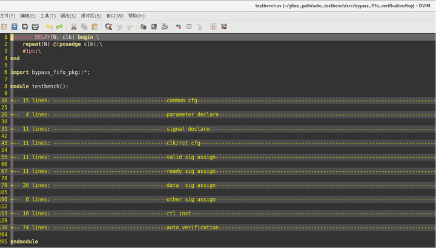
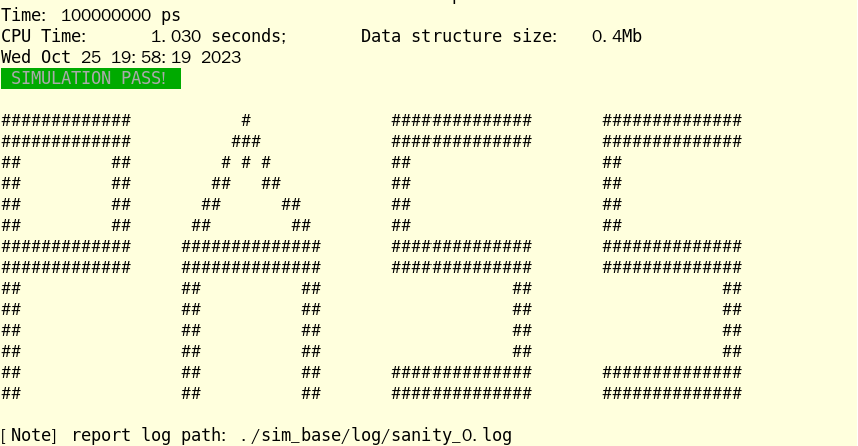
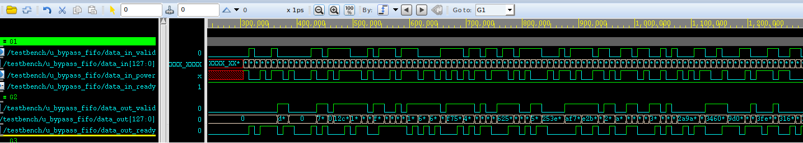
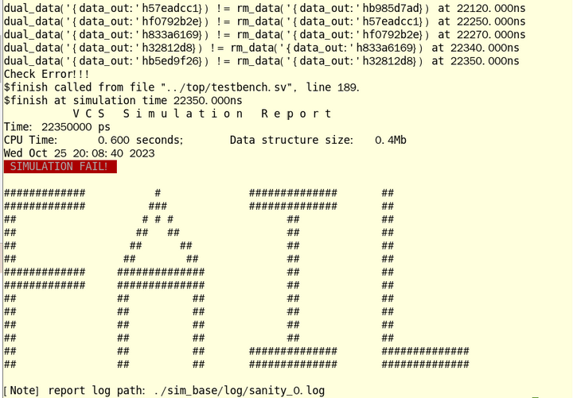
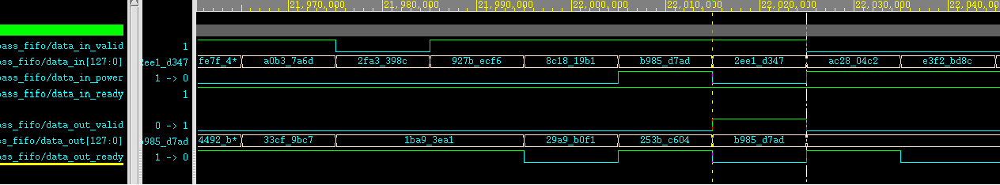

auto_testbench说明文档
前言
兄弟萌，
当你着手开始写新的RTL时，想不想边写边编译边清理bug呢？
当你对一个语法感到费劲，需不需要立刻有个环境做一下实验呢？
当你费了九牛二虎之力终于写完个模块时，有没有立刻看看波形的悸动呢？
当你完成了初步的debug之后，要不要来些独立自主的随机测试呢？
那么请不要犹豫，果断来入手一波疑似RTL定向验证的巅峰之作auto_testbench吧！
工程路径
auto_testbench: 用于自动生成verilog rtl的定向用例仿真平台的脚本
更新记录
| 时间 | 更新 | 说明 |
|---|---|---|
| 2024/2/1 | 1.增加了sim_start/sim_finish/sim_finish_pulse等控制逻辑 2.修改了仿真结束机制 3.修改了代码对齐不规整的严重问题 |
1.握手接口的驱动会在sim_start为1后进行 2.增加了在sim_finish为1的1000ns后结束仿真的线程 3.代码变更好看了！ |
功能列表
- 基于输入生成可编译仿真的RTL验证与执行环境；
- 自动例化顶层，进行时钟和复位驱动；
- 自动对端口进行随机；
- 针对握手接口进行协议随机优化；
- 可选择增加自动比对环境；
- 生成用于实验的空仿真环境；
使用说明
脚本工作于linux环境，下载工程后执行命令：
{$script_path}/auto_testbench [-f module.v] [-v]-f：后缀rtl的文件名，推荐在rtl所在目录下进行执行，也支持带有路径，如不加则生成空工程用于仿真；
-v：表示需要自动生成比对环境代码，否则只生成仿真环境；
生成的仿真环境如下（以v1版本下的bypass_fifo.v为例）：
.
├── cfg
│ ├── cfg.mk
│ ├── check_fail.pl
│ ├── run.do
│ └── tb.f
├── sim
│ └── Makefile
├── top
│ └── testbench.sv
└── ver
└── bypass_fifo_pkg.svtop目录下的testbench.sv是赏心悦目的顶层文件：

在sim目录下执行：
make run [seed=xxx] [wave=on/off][mode=xxx]可进行环境仿真，仿真结果会放置于mode同名目录下，可进行波形debug：
verdi -ssf [mode]/wave/xxx.fsdb &使用示例
波形验证
bypass_fifo是本工具的一个测试模块，其接口如下：
module bypass_fifo #(
parameter DEPTH = 8,
parameter WIDTH = 128
)(
input clk,
input rst_n,
input data_in_valid,
input [WIDTH -1:0] data_in,
input data_in_power,
output data_in_ready,
output data_out_valid,
output [WIDTH -1:0] data_out,
input data_out_ready
);其功能是一个握手型fifo，但是只有data_in_power为1的数据会被输出，其他数据会被丢弃。咱先不说这个功能为啥这么奇怪（事实上这是一对多fifo的一部分），就单纯聊怎么验证这个模块。
在bypass_fifo.v的同级目录下输入：
{$script_path}/auto_testbench -f bypass_fifo.v会得到如下的提示内容：
##====================================================================##
Gen over! please cd ./bypass_fifo_verification/simYou need modify ./bypass_fifo_verification/top/testbench.sv like cp ./bypass_fifo_verification_bak/top/testbench.sv ./bypass_fifo_verification/top/You need modify ./bypass_fifo_verification/cfg/tb.f like cp ./bypass_fifo_verification_bak/cfg/tb.f ./bypass_fifo_verification/cfg/
##====================================================================##提示内容的意思就是：
现在你可以到sim目录去跑仿真了。如果你之前目录下有一个bypass_fifo_verification那我已经把它改名成bypass_fifo_verification_bak目录了，你看看要不要把旧的testbench.sv拷贝过来用，顺便看看tb.f是不是也得拷过来呀。
不管这些，直接跳转到./bypass_fifo_verification/sim目录，执行make cmp进行编译。正常来说编译会直接通过，遇到错了就根据报错进行排查。如果报文件缺失，那么请打开 ./bypass_fifo_verification/cfg/tb.f：
+libext+.v+.sv
-y /home/ICer/gitee_path/auto_testbench/src/
/home/ICer/gitee_path/auto_testbench/src/bypass_fifo.v
../top/testbench.sv这个文件里会把bypass_fifo.v所在的目录设置为全局搜索目录，如果这样不足以涵盖内部调用的模块，那么请进一步修改该文件。
修改掉全部的编译bug后编译即可通过，之后打开 ./bypass_fifo_verification/top/testbench.sv文件，按照自己的需求修改。在该文件中对信号进行了四种力度的随机：
valid握手信号：在与对应的ready信号握手后，随机跳变；
ready握手信号：每拍随机跳变；
info握手信号：在对应的valid&ready信号握手后，或者valid为0时，随机跳变；
其他信号：initial内随机赋初始值；
举个例子，对于data_in_power，其生成逻辑是这样的：
always @(posedge clk or negedge rst_n)begin
if(~rst_n)begin
data_in_power <= 'x;
end
else if(data_in_valid && data_in_ready)begin
data_in_power <= $urandom;
end
else if(data_in_valid == 0)begin
data_in_power <= $urandom;
end
end上述内容由于涉及到信号识别以及信号匹配，所以很容易出问题（比如aa_bb_rvalid应该找bb_aa_rready，但是可能误找到bb_aa_wready），所以一般需要检查和按照需求修改下。
修改完成后，在sim目录下键入make run seed=0 wave=on进行仿真，等待pass（必然pass因为都没有比对）：

之后通过verdi -ssf sim_base/wave/sanity_0.fsdb &打开波形即可：

自动比对
对于一种场景的模块，建议加入自动比对：单一握手型输出的模块。仍以bypass_fifo为例，如果想要加入自动比对，那么在生成时后缀-v即可：
{$script_path}/auto_testbench -f bypass_fifo.v -v此时生成的环境中，多了一个文件./bypass_fifo_verification/ver/bypass_fifo_pkg.sv：
package bypass_fifo_pkg;
parameter ERROR_DEBUG_CNT = 5;
parameter DEPTH = 8;
parameter WIDTH = 128;
int error_cnt = 0;
bit check_en = 0;
typedef struct{
bit [WIDTH -1:0] data_in;
bit data_in_power;
} data_in_valid_struct;
data_in_valid_struct data_in_valid_bus_q[$];
typedef struct{
bit [WIDTH -1:0] data_out;
} data_out_valid_struct;
data_out_valid_struct rm_q[$];
data_out_valid_struct data_out_valid_bus_q[$];
endpackage简单说下思路，工具将若干输入和输出封装为struct，并且声明输入输出队列和一个输出类型的rm队列。在testbench中补充了四个task：
in_queue_gain：获取输入数据，并写入输入队列；
out_queue_gain：获取输出数据，并写入输出队列；
rm_queue_gain：使用输入队列，预期输出数据，并写入rm队列；
queue_check：对比输出队列与rm队列，对比不通过则报错，这个task是固定的不需要修改；
对bypass_fifo而言，前两个方法已经生成正确，不需要修改：
task in_queue_gain();
while(1)begin
@(negedge clk);
if(data_in_valid && data_in_ready)begin
data_in_valid_struct data_in_valid_dat;
data_in_valid_dat.data_in = data_in;
data_in_valid_dat.data_in_power = data_in_power;
data_in_valid_bus_q.push_back(data_in_valid_dat);
end//if-end
end//while-end
endtask: in_queue_gain
task out_queue_gain();
while(1)begin
@(negedge clk);
if(data_out_valid && data_out_ready)begin
data_out_valid_struct data_out_valid_dat;
data_out_valid_dat.data_out = data_out;
data_out_valid_bus_q.push_back(data_out_valid_dat);
end//if-end
end//while-end
endtask: out_queue_gain而需要修改的是对rm的预期，根据data_in_power判定数据是否需要输出：
task rm_queue_gain();
data_in_valid_struct data_in_valid_dat;
data_out_valid_struct data_out_valid_dat;
while(1)begin
wait(data_in_valid_bus_q.size > 0);
data_in_valid_dat = data_in_valid_bus_q.pop_front();
if(data_in_valid_dat.data_in_power === 1'b1)begin
data_out_valid_dat.data_out = data_in_valid_dat.data_in;
rm_q.push_back(data_out_valid_dat);
end
end
endtask: rm_queue_gain完成修改后，将./bypass_fifo_verification/ver/bypass_fifo_pkg.sv中的check_en修改为1，重新跑仿真：

此时会发现比对未通过（这个模块确实有功能bug），打开波形确认'hb985d7ad这个数是怎么个情况：

发现'hb985d7ad这个数输出没有握手就data_out_valid跳变了，显然是功能性bug。
简单环境生成
有时我们没有要验证的模块，只是想基于SV的环境做一些实验，那么可以通过auto_testbench来生成一个可执行的空环境：
{$script_path}/auto_testbench之后正常进行实验和仿真即可。